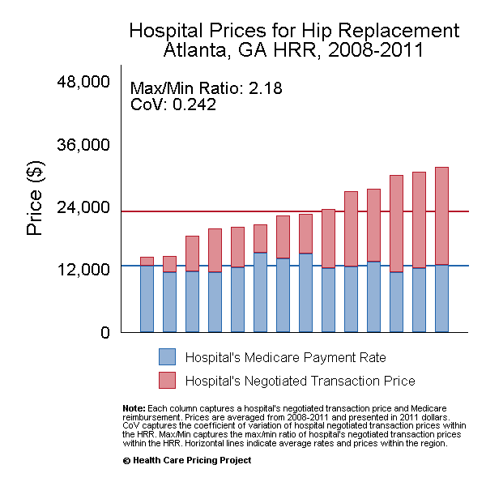

12 History and Hospital Pricing
In this chapter, we will delve into the realm of U.S. hospitals and their pricing structures. We’ll explore some of the history of hospitals in the U.S., how that history plays out in more recent policy, and some nuance about what we mean by “prices” in U.S. healthcare.
12.1 History of Hospitals in the U.S.
The historical timeline of hospital care in the U.S. presents intriguing phases. Before 1900, seeking hospital care was not a prevalent practice, particularly due to the prevailing charity-based care system. Hospitals served as learning or even experimental environments for physicians during this period. The early 1900s saw significant advancements in safety and technology. The mid-1900s witnessed expansive growth, particularly in affluent urban areas. The introduction of Medicare and Medicaid in 1965 marked a pivotal shift in healthcare financing. Originally, hospitals were reimbursed under a “cost-plus” framework.
In the contemporary landscape, U.S. hospitals primarily operate as not-for-profit entities, but we’ll discuss this more in the next chapter. They often maintain affiliations with universities and religious organizations. Urban areas benefit from concentrated hospital services, while rural regions face limited access. The pricing landscape remains opaque, with historically little cost management strategies in place.
The past three decades have witnessed substantial technology integration within hospitals. This period has also seen a shift towards quality improvement initiatives, pay-for-performance models, and variants of capitation. Efforts to increase transparency in pricing have emerged. However, competitiveness has dwindled, giving rise to increased vertical integration, such as hospitals owning physician practices or insurers acquiring hospitals.
12.2 Hospital Prices
The escalating healthcare expenditure in the U.S. has drawn attention to the significant role of high healthcare prices, particularly those associated with hospitals. Understanding the dynamics of hospital markets and pricing becomes imperative in addressing the broader challenge of healthcare spending. In one way, understanding hospital “pricing” is simple in that it derives from a bilateral negotiation with insurers. Hospitals lack unilateral authority to set prices and engage in a bargaining process where insurers and hospitals share a predetermined total amount. The party with greater bargaining power typically secures a larger share.
But in practice, a defining feature of hospital pricing and services is their inherent complexity. For one, multiple payers are involved, each offering distinct prices. Medicare, for example, pays according to their FFS schecule, medicare fee-for-service prices. Medicaid does the same, medicaid payments. And there are several privatized elements within these programs, including Medicare Advantage and Medicaid managed care, wherein insurers and hospitals negotiate over prices but with an indirect (but binding) ceiling on those prices imposed by federal and state policies. These different payers contribute to the complex pricing landscape prevalent in U.S. healthcare today.
Moreover, we have slightly different notions of “prices” depending on who you ask. These include things like “charges”, “costs”, or “out-of-pocket spending.” A particularly confusing element of this is what’s called the hospital “charge”. These figures are kind of like a list price—they reflect what the hospital would like to get paid for a service. But these figures are astronomically high in many cases and are largely unrelated to costs or other negotiated prices.
The complexity introduced by different insurers and different notions of “price” is evident in the data, as reflected in Figure 12.1. Here, we see significant differences between a hospital’s “charge” amount, the Medicare FFS amount, and the negotiated payment rate with commercial insurers.

In addition to differences in the definition of prices and difference across payers, the nature of the pricing negotiation with insurers introduces additional complexity. For example, fee-for-service pricing involves pricing per procedure, but this price could be based off a percentage of charges or a markup over Medicare rates. Since negotiating as a percent of charges involves less downside risk, hospital with more market power tend to be more able to negotiate as a percentage of charges, and hospitals with lesser market power tend to rely more on negotiations as a markup over Medicare rates. In addition, some insurers and hospitals negotiate prices with capitation, in which hospitals are paid essentially per patient in their area, with some form of shared savings agreements across providers.
All of this means that, even among negotiated commercial insurance prices in the same market, we can see significant variation in prices. Such variation is depicted in Figure 12.2. Even for a homogeneous product like lower limb MRIs, prices from the highest-price provider can be more than 2x higher than that of the lowest-price provider.
